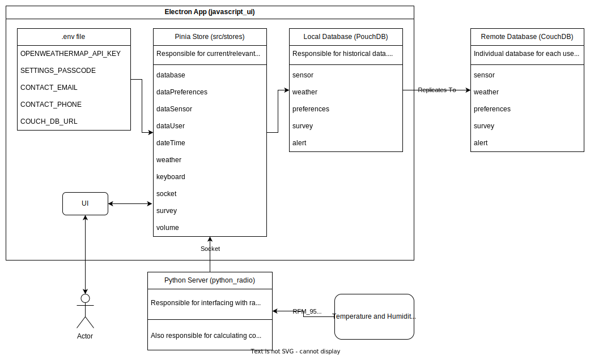

Ethos Base Station
This repository stores the code which is run on the Raspberry Pi for the Ethos in home system trial.
Contents
Tips
Show settings button
To show the settings button, press the ethos logo (top left) 7 times in quick succession.
Installation and building
Development build
Requirements: NPM, Yarn, Python 3.9 (with venv) and Docker
- Ensure Docker is open and running.
- Under
./javascript_uimake a file named.envusing the provided.env.examplefile and fill in all variables. - Run install script
sh dev_install.sh(Mac/Linux) or.\dev_install.bat(Windows). - To run development build run
sh dev_run.sh(Mac/Linux) or.\dev_run.bat(Windows). - For testing, configure a User with ID of
999and a password of12345
Note: If you get an error CouchDB did not start in time or Cannot connect to the Docker daemon at unix:///var/run/docker.sock. Is the docker daemon running?, make sure docker is running, either by launching the application or by running sudo systemctl start docker (Linux).
Production build
Requirements: NPM, Yarn, Python 3.9 (with venv) and Git
- Image Raspberry Pi OS to an SD card using Raspberry Pi Imager. When setting up the user ensure the name is set to
pi. This is important for automatic process startup with systemd - Ensure that existing packages are up to date with
sudo apt update && sudo apt -y upgrade - (If required) Setup waveshare touchscreen divers by following these instructions
- Install nvm by using:
curl -o- https://raw.githubusercontent.com/nvm-sh/nvm/v0.39.5/install.sh | bash - Source terminal with
source ~/.bashrc - Install node version 18 with
nvm install 18and then activate it withnvm use 18 - Install Yarn with
npm install --global yarn - Ensure that Python is installed with
python3 --version, and if not install it - Navigate to the home directory with either
cd ~orcd /home/pi - Clone the GitHub repository with
git clone git@github.com:climate-ethos/ethos-raspberry-pi.git - Move into the newly created directory with
cd ethos-raspberry-pi - Under
./javascript_uimake a file named.envusing the provided.env.examplefile and fill in all variables. - Make all pi-related scripts executable with the command:
find . -maxdepth 1 -type f -name "pi_*.sh" -exec chmod +x {} \; - Install dependencies by running
sh pi_install.sh(Pi). This will also setup auto-launch at startup and automatic updates with a cron job. - Build production binary/Electron app using
sh pi_build.sh - Run systemd services with
sh pi_run.sh(Pi), or alternatively restart device.
If this doesn't work you can try a manual launch with pi_run_manual.sh (Pi) for debugging.
Important: Ensure that the application is cloned in the home directory (~/ethos-raspberry-pi). Otherwise systemd services will not work. The system has been designed with Python 3.9 and Node 18 so if any errors arise check the versions of those two services first.
Testing
Unit testing
Requirements: NPM, Yarn and Python 3.9 (with venv)
- Run executable with
sh dev_tests_unit.sh(Mac/Linux)
End-to-end testing
Requirements: NPM, Yarn, Python 3.9 (with venv) and Docker
- Run executable with
sh dev_tests_e2e.sh(Mac/Linux).
Application data structure
Data flow diagram

Each data type shown in the diagram is explained below:
Database types
Definitions for the structure can be found in javascript_ui/src/typings/database-types.d.ts. The database is used to store historical data which may be useful for research purposes. Each row in the database corresponds to a historical record of one of the following types:
Sensor
{
type: 'sensor';
time: Date;
userId: string;
sensorLocation: string | undefined;
sensorId: number | undefined;
temperature: number | undefined;
humidity: number | undefined;
coreTemperatureDelta: number | undefined;
}
Weather
{
type: 'weather';
time: Date;
userId: string;
weatherLocation: string | null;
temperature: number | null;
humidity: number | null;
}
Preferences
{
type: 'preferences';
time: Date;
userId: string;
audioType: AudioType;
isFollowUp: boolean;
coolingStrategyOptions: Array<{
key: string;
haveAccessTo: boolean;
wouldUse: boolean;
whyNotUse: Array<string>;
whyNotUseOther: string;
}>;
}
Survey
{
type: 'survey';
time: Date;
userId: string;
wasHome: undefined | boolean;
coolingStrategiesUsed: Array<string>;
howEffective: undefined | number;
}
Alert
{
type: 'alert';
time: Date;
userId: string;
riskLevel: RiskLevel | undefined;
volumePercent: number;
dismissMethod: null | 'not here' | 'cooling strategies' | 'dismiss';
}
Pinia store types
This is the structure of the state which is stored in the pinia store. The pinia store is used for live data which directly affects the UI or application logic.
Database store
The database store is designed to provide centralized access and actions related to a PouchDB database and its replication to a CouchDB instance.
-
db: Holds the instance of the PouchDB local database. -
replicationHandler: Holds the replication handler instance, which is responsible for replicating the PouchDB instance to a remote CouchDB database. -
replicationStatus: Provides the current status of the replication process. Can be one of the following values: initialactivepauseddeniedcompleteerror
Data Preferences store
The Data Preferences store manages user preferences related to audio types, follow-up settings, and cooling strategy options.
-
audioType: Specifies the type of audio that will be used. It can be one of the enumerated values fromAudioType(e.g.,AudioType.TONE). -
isFollowUp: A boolean flag to indicate if the user wishes to follow up with a focus group discussion. -
coolingStrategyOptions: An array of objects representing the various cooling strategies. Each object contains a key, which is the identifier for the strategy, and several other options likehaveAccessToandwouldUse.
The coolingStrategyOptions array is generated dynamically based on keys from the coolingStrategies helper, and each strategy option object is set to default values as defined in defaultOptions.
Data Sensor store
The Data Sensor store is designed to manage sensor data, including alert states and other sensor-related metrics.
-
alertSensor: Holds the sensor data for the current alert. It is of typeSensorDatawhich includes fields likeid,name,temperature, etc. -
allSensorData: An array that contains objects of typeSensorData. Each object holds information about a sensor including itsid,name,temperature,humidity,lastSeen,coreTemperatureDelta, andriskLevel. id: Sensor identification number.name: Sensor name (in this case where it is located).temperature: Current temperature data from the sensor (in degrees Celsius).humidity: Current humidity data from the sensor (relative humidity).lastSeen: The most recent time the sensor was active.coreTemperatureDelta: Calculated change of core temperature from baseline, using the JOS-3 model.riskLevel: Calculated risk level based on core temperature.
The allSensorData array is initialized with four sensor objects, each having their fields set to undefined.
Data User store
The Data User store is designed to manage user-related data, such as geographic location, biometric details, and sex. This is used for calculating core temperature.
id: Holds the ID of the user which is used to connect to the database and store infopassword: Stores the password for the associated user ID to connect tot the database-
postcode: Holds the postcode of the user. -
latitude: Holds the latitude coordinate corresponding to the user's postcode. -
longitude: Holds the longitude coordinate corresponding to the user's postcode. -
ageYears: Holds the age of the user in years. -
heightCm: Holds the height of the user in centimetres. -
weightKg: Holds the weight of the user in kilograms. -
sex: Holds the sex of the user. Can be either: 'female', 'male' or 'other'.
Date Time store
The Date Time store is designed to manage date and time-related data. It updates this data periodically.
currentDate: Holds the current date and time as a JavaScriptDateobject.
Keyboard store
The Keyboard store is designed to manage the virtual keyboard behavior and settings in the application. This includes what input the keyboard is bound to, its current value, type, and dimensions.
-
keyboardBinding: Holds the HTMLInputElement that the keyboard is currently bound to. Used to refocus the input. Can be eitherundefinedor an instance ofHTMLInputElement. -
keyboardValue: Holds the value to which the keyboard is currently bound. Can be eitherundefinedor an object with avalueproperty of typestring. -
keyboardType: Specifies the type of the keyboard. Can be either'text'or'number'. -
keyboardHeight: Holds the height of the keyboard in pixels. Can be eitherundefinedor anumber.
Socket store
The Socket store is designed to manage the real-time communication between the client and the server using Socket.io. This includes tracking the state of the connection and the socket instance itself.
-
isConnected: A boolean flag that indicates whether the socket connection is currently established. Defaults tofalse. -
socket: Holds the instance of the Socket.io client connected to the server. This is the socket that is responsible for emitting and listening to real-time events. Can be eithernullor an instance ofSocket<ServerToClientEvents, ClientToServerEvents>.
Survey store
The Survey store is designed to manage the user survey data and logic. This includes tracking the number of alerts that have occurred since the last survey, storing the user's answers to the survey questions, and determining whether the survey modal should be displayed.
-
alertsSinceLastSurvey: An integer that keeps track of the number of alerts that have occurred since the last survey was displayed. Starts from 0. -
alertsInLastTimePeriod: An integer that holds the number of alerts that have occurred in the last specified time period. This is used to display the number of alerts to the user when showing the survey. -
isShowSurveyModal: A boolean flag that indicates whether the survey modal should be shown. Defaults tofalse. -
surveyAnswers: An object that holds the user's answers to the survey questions. It follows the structure ofSurveyDatabaseStructure, and includes: wasHome: Can be eitherundefinedor a boolean indicating whether the user was home.coolingStrategiesUsed: An array that stores the cooling strategies used by the user.howEffective: Can be eitherundefinedor a value indicating how effective the cooling strategies were.
Volume store
The Volume store is designed to manage the volume settings in the application. This includes tracking the current volume value and providing the capability to increase or decrease it.
volumeValue: An integer that holds the current value of the volume. This value is bounded between 0 andmaxVolume(5 by default).
Weather store
The Weather store is designed to manage the weather-related data and forecast for the user. It provides functionalities like fetching current weather conditions and detailed forecasts based on the user's latitude and longitude.
-
isShowDetailedForecast: A boolean value indicating whether to show the detailed forecast modal or not. -
errorMessage: A string that holds any error message generated during the data fetching process. Initially set to 'Updating data...'. -
stationName: A string or null that holds the name of the weather station from where the weather data is fetched. -
currentTemp: A number or null that holds the current temperature in metric units. -
currentHumidity: A number or null that holds the current humidity level. -
weatherDescription: A string or undefined that holds a textual description of the current weather conditions, e.g., "clear sky". -
weatherIconId: A string or null that holds the icon ID for the current weather conditions. This ID is used to display the corresponding weather icon. -
forecastTemps: An array of objects or null that holds the detailed forecast data. Each object contains thedate(as a JavaScript Date object) and thetemperature(as a number in metric units). -
pollInterval: A number or null that specifies the current interval to update weather